TrackIt · Household money app
TrackIt, one place for the whole household’s money
PRODUCT DESIGN · AI UX
REDESIGN
2026
99 SCREENS
View full case study on Behance

Go back
01
OVERVIEW
02
CONTEXT
03
PROBLEM
04
KEY DECISION
05
FINAL DESIGN
Clearing the month
When a payment fails
TrackIt AI
When the assistant isn’t sure
06
OUTCOME
01 / 06
OVERVIEW
About TrackIt
Trackit started as one place to pay every household bill. This redesign makes it one place for the whole household’s money. Bills, payments, shared expenses, budgets and insights now sit on one record. A settlement between flatmates is never counted as spending, and a bill paid once lands in the right budget, once.
TrackIt AI
On top sits TrackIt AI with exactly three jobs: plan a budget, split a receipt and answer questions about spending. It drafts and explains. It never moves money and never saves anything without you.
My role
Solo product designer for the redesign, built on the original TrackIt design language rather than a new one.
Tools used
Figma
FigJam
Forms
Notion
Redesign in numbers
99
Screens
7
Modules
3
AI jobs: plan, split and ask
02 / 06
CONTEXT
What’s new:
seven modules and one assistant
Seven modules and one assistant, built on the original TrackIt design language rather than a new one. Every module reuses the same cards, type and navigation people already know.
SCOPE
13 SCREENS
Home and shortcuts
The original Home, a second row of shortcuts and a monthly overview.
7 SCREENS
Bills
Every bill with its split, its mandate and its budget category.
12 SCREENS
Payments
The original checkout, plus partial success and safe recovery.
10 SCREENS
Splits
Four split methods, balances and settling up between members.
8 SCREENS
Budgets
Personal and household budgets that know which bills are still due.
8 SCREENS
Households
Profile, members, invites and three roles with clear permissions.
5 SCREENS
Insights
Facts from your records: categories, shares, plans and trends.
36 SCREENS
TrackIt AI
Plan a budget, split a receipt and ask about spending, plus ten guardrail states.
03 / 06
PROBLEM
The problems
we try to solve
01
Shared costs live in chats.
Flatmates settle groceries and rent over messages, so nobody trusts the running balance.
02
Budgets ignore real bills.
A budget that doesn’t know rent is due can’t say what is actually left to spend.
03
Failures are a black box.
When one bill in a batch fails, people can’t tell what was taken and what to do next.
04
Assistants that act on their own.
Money tools that guess who had what, or change a plan unasked, lose trust fast.
04 / 06
KEY DECISION
How much
the assistant may do
The biggest choice in the redesign was how much the assistant may do. People wanted help with the tedious parts, and refused anything that touched money on its own. Four rules settled it.
RULE 01
Asks first
It asks before it assumes. When an instruction is ambiguous or data is missing, it asks one question with concrete options.
RULE 02
Labelled
Facts and suggestions are labelled. Anything from your records says so; advice sits in a separate Suggestion block.
RULE 03
Confirm to save
Drafts are never saved. Budgets and splits stay drafts until you review and confirm them yourself.
RULE 04
No money moves
It never touches money. No payments, settlements, mandate changes or actions on its own.
THE DECISION
TrackIt AI has three jobs: plan a budget, split a receipt and answer questions about spending. It works only from your records, shows its numbers, and every result waits for your confirmation.
05 / 06
FINAL DESIGN
ARCHITECTURE
Four tabs, no new habits
The original bottom navigation stays: Home, Transactions, Insights and Profile. New modules slot into the tab they belong to, and Home’s shortcuts reach each of them in one tap.
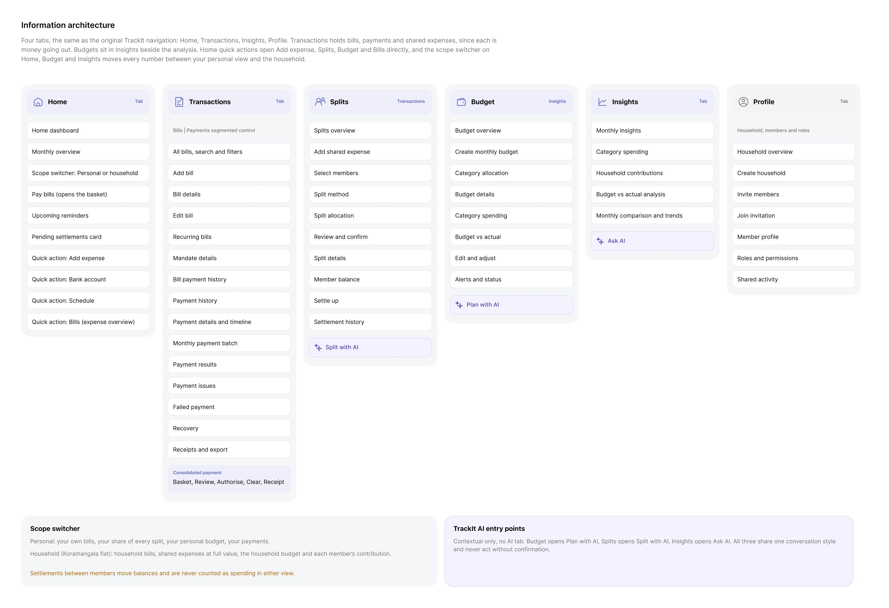
CRITICAL PATH
Clearing the month
The original sequence survives the redesign untouched: Basket, Review, Authorise, Clear, Receipt. What is new is the ending, where a partly failed batch says exactly what happened to each bill.
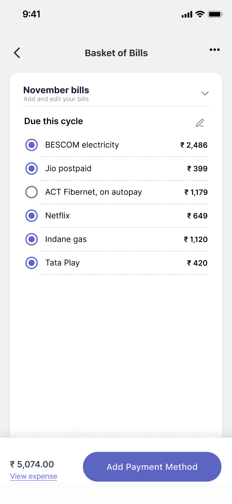
Basket
Review
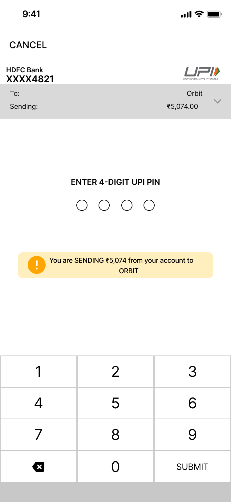
Authorise
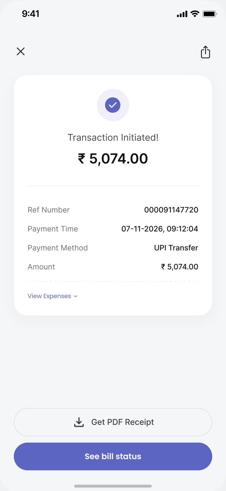
Clear
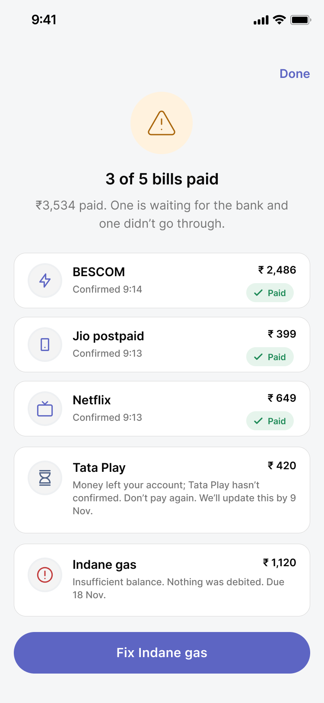
Results
01
Basket
This month’s bills; ACT stays out because autopay already pays it.
02
Review
One total of ₹5,074, paid straight from the bank account.
03
Authorise
A single PIN authorises the whole sequence.
04
Clear
The receipt people said they needed, with every reference.
05
Results
3 of 5 paid, one waiting for the bank, one that didn’t go through.
RECOVERY
When a payment fails
Partial success is the normal case for a batch, so it got its own flow. Nothing is called a failure until the bank says so, and every fix offered is one that can’t pay a bill twice.
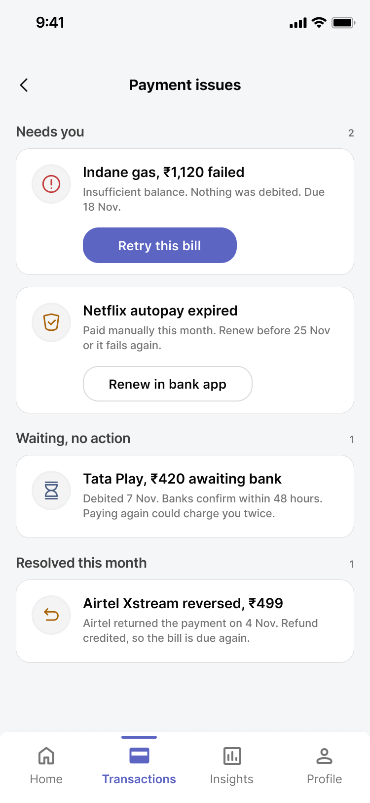
Payment issues
Grouped by what you must do: act, wait, or nothing at all.
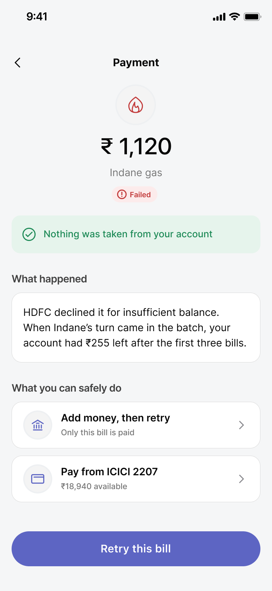
Failed payment
Leads with what matters most: no money left the account.
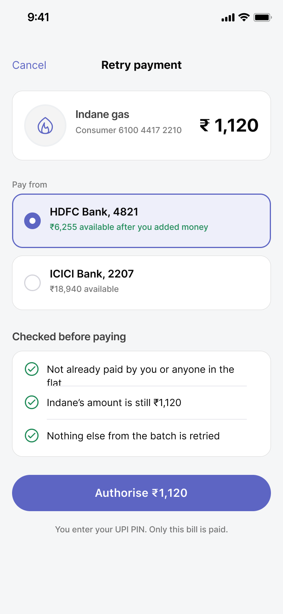
Retry payment
Safety checks run again before one bill is retried.
TRACKIT AI
Plan with AI
From Budget, Plan with AI. The assistant reads three months of spending, asks one question when the answer changes the outcome, drafts a plan and explains every number. Nothing is saved until you confirm.
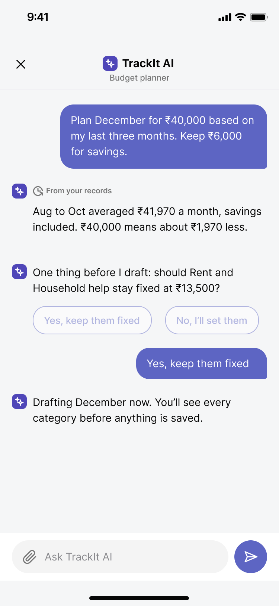
Conversation
Restates the facts it used, then asks one question with quick replies.
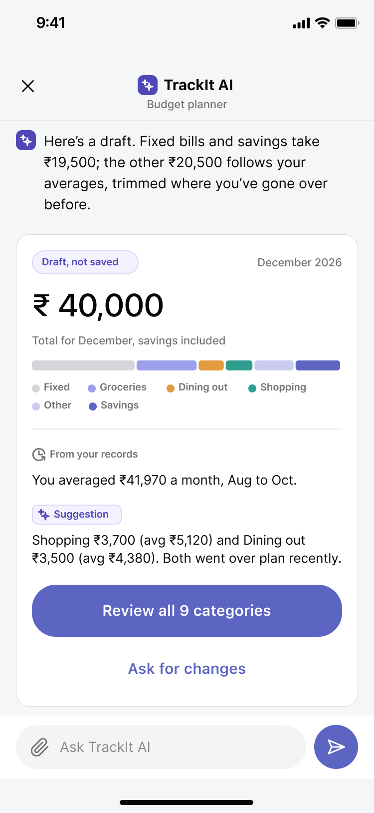
Draft budget
Marked Draft, not saved; facts and suggestions tagged apart.
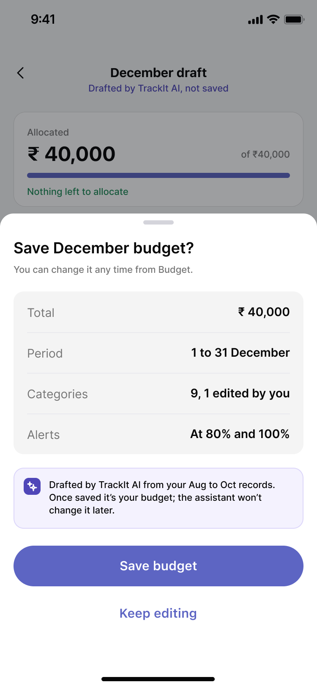
Confirm
A plain summary, plus who drafted it and from what.
Split with AI
From Splits, Split with AI. Photograph a receipt, say who shared it in plain words, and the assistant allocates it item by item. When it can’t know who had something, it asks.
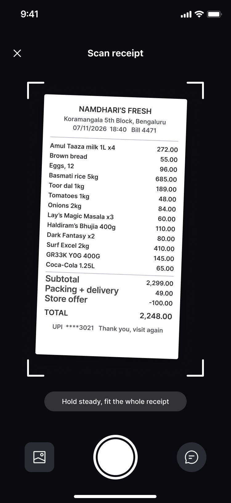
Scan receipt
A native camera with edge guides; the receipt is the only subject.
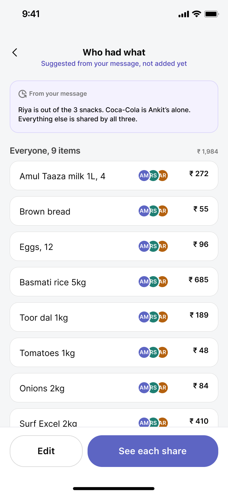
Who had what
Grouped by who shared each item: 9, 3 and 1 of 13 items.
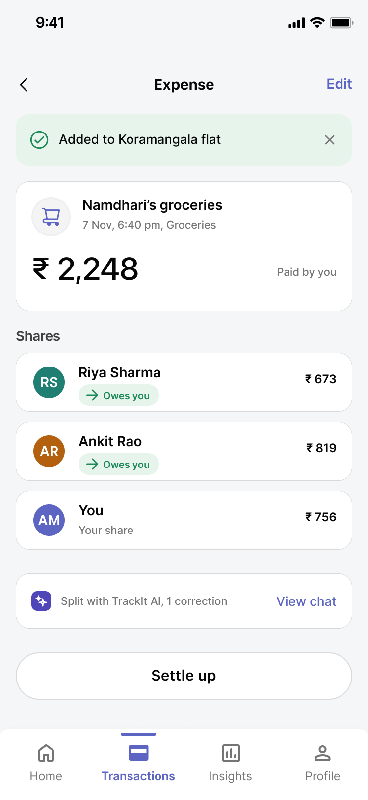
Saved split
An ordinary Splits record. No money moved.
Ask AI about your money
From Insights, Ask AI. Answers come from the same records as the Insights tab, lead with one sentence that answers the question, and say plainly when there isn’t enough data yet.
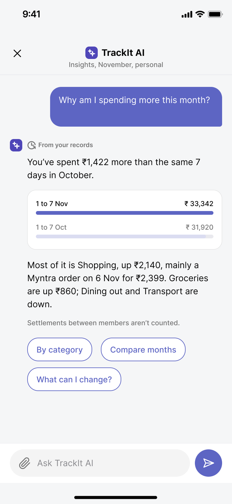
Spending analysis
One sentence first, the numbers behind it, then follow-ups.
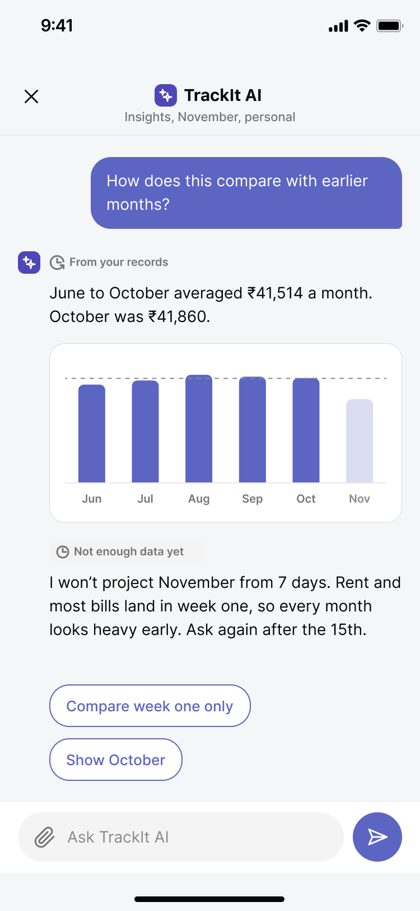
Monthly comparison
Won’t project November from 7 days, and says why.
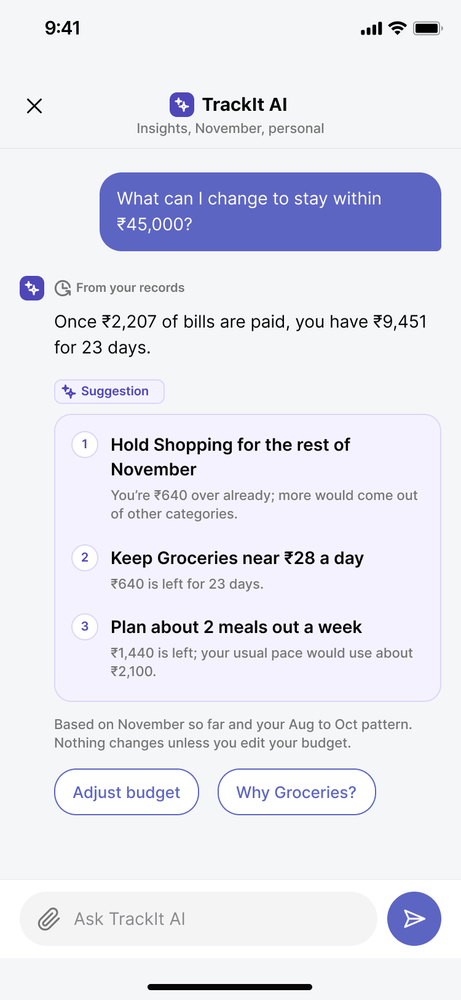
Recommendation
Facts tagged as records; advice in a separate Suggestion block.
GUARDRAILS
When the assistant isn’t sure
One set of behaviours across all three capabilities. The assistant asks rather than assumes, checks its own arithmetic, says when data is thin, and recovers without losing your work.
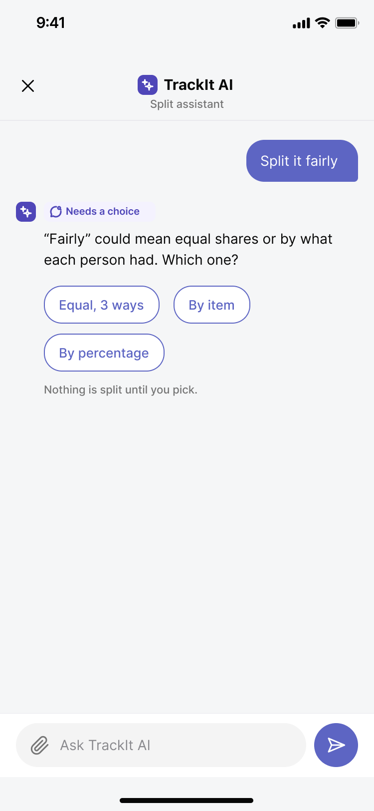
Unclear instruction
“Split it fairly” gets one question with concrete options.
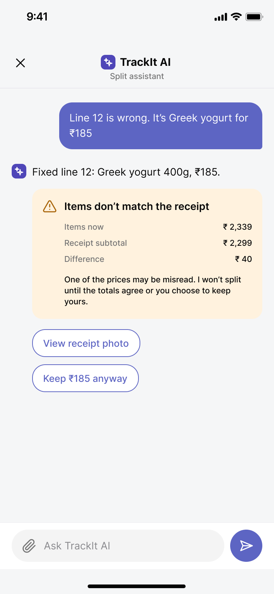
Wrong extraction
A correction that breaks the subtotal blocks splitting.
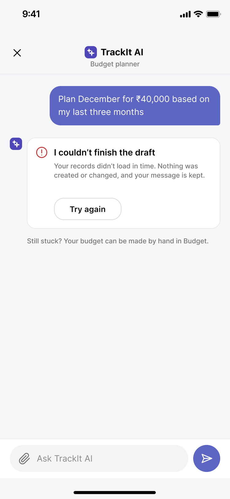
AI error
Says what failed, confirms nothing changed, keeps your message.
99 screens in light and dark. Every flow above is clickable in five prototype journeys.
06 / 06
OUTCOME
Outcomes & reflection
What the redesign produced, and three things I would do differently if it ran again.
Delivered
99
High-fidelity screens across seven modules
10
Shared guardrail states for TrackIt AI
5
Clickable prototype journeys
What I’d do differently
START FROM THE EXISTING COMPONENTS
I first drew new components and later retuned them to the original screens. Starting from the existing library would have saved a full pass.
FIT EVERY SCREEN TO THE PHONE FIRST
Long scrolling screens hid what mattered. Designing to one phone height from the start forces the priority calls sooner.
TEST THE ASSISTANT WITH HOUSEHOLDS
The rules for when the assistant asks or acts work on paper. They deserve a session with real flatmates and real receipts.
THAT WAS THE SHORT VERSION
The full case study has every module, the five prototype journeys and the dark theme.
View full case study on Behance
Next project
Signease
05
Bridging communication through Indian Sign Language